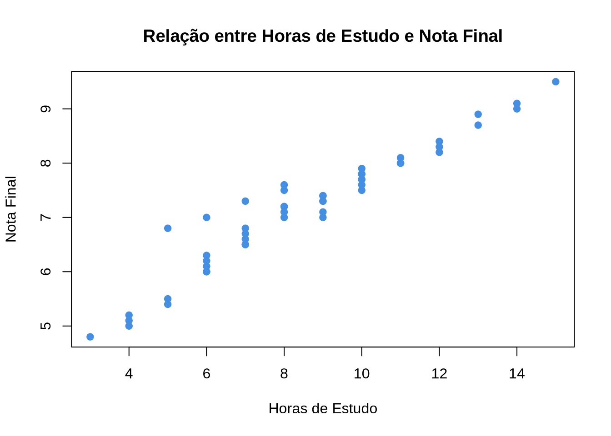
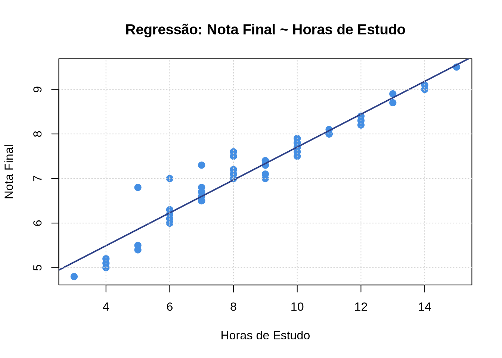
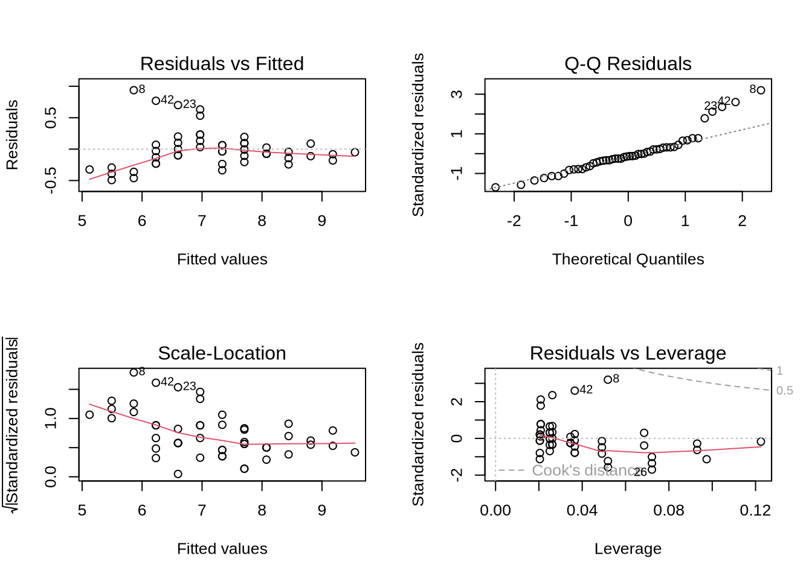
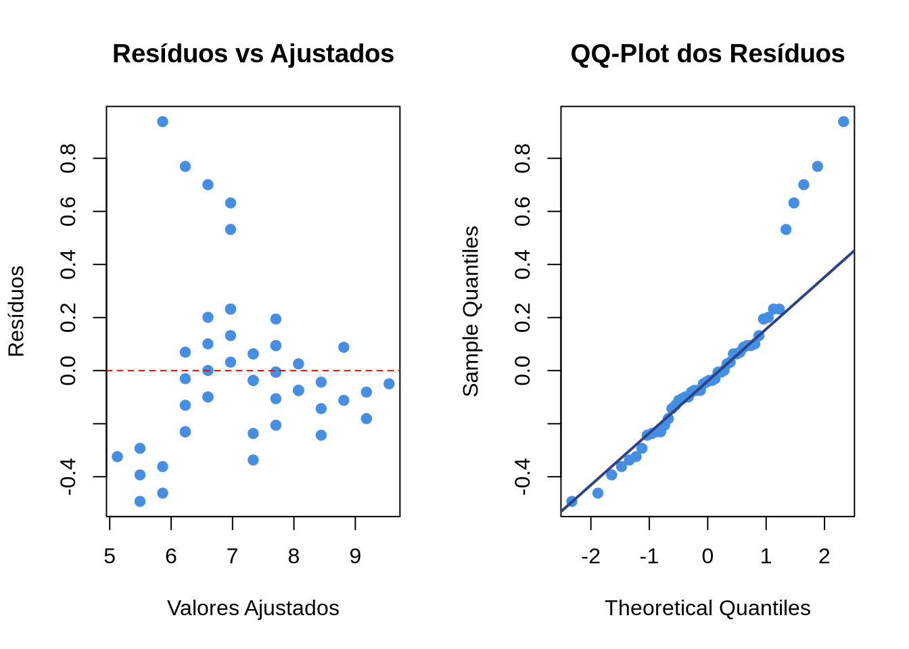
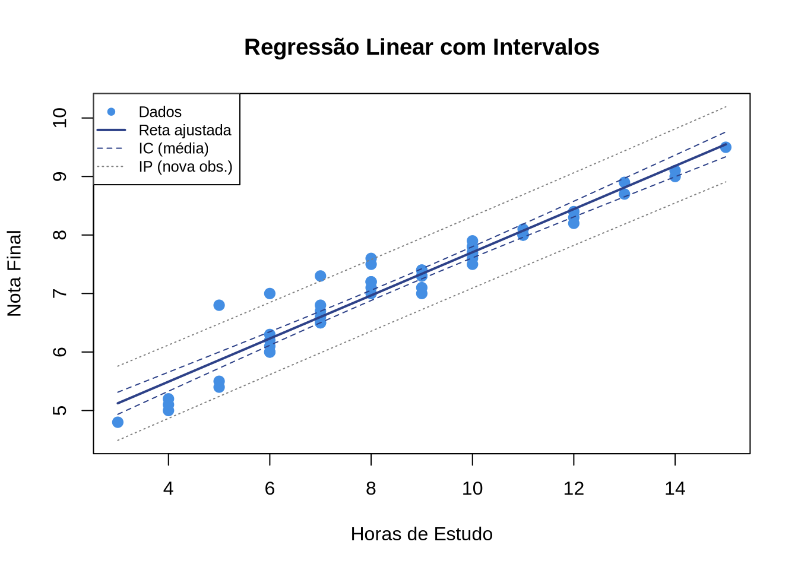

4 Regressão Linear Simples
Nos capítulos anteriores, aprendemos a descrever variáveis individualmente (Estatística Descritiva) e a fazer inferências sobre parâmetros populacionais (Inferência Estatística). Agora, daremos um passo além: investigar a relação entre duas variáveis quantitativas. A ferramenta fundamental para isso é a Regressão Linear Simples.
4.1 Introdução: Relações entre Variáveis
Muitas perguntas de pesquisa envolvem a relação entre duas variáveis:
- Alunos que estudam mais horas obtêm notas mais altas?
- Funcionários com mais experiência recebem salários maiores?
- O consumo de combustível de um carro depende da velocidade?
4.1.1 Diagramas de dispersão
O primeiro passo para investigar a relação entre duas variáveis quantitativas é construir um diagrama de dispersão (scatter plot), no qual cada observação é representada por um ponto no plano cartesiano.
4.1.2 Correlação vs. Causalidade
NoteDefinição
O coeficiente de correlação de Pearson (\(r\)) mede a intensidade e a direção da relação linear entre duas variáveis quantitativas:
\[ r = \frac{\sum_{i=1}^{n}(x_i - \bar{x})(y_i - \bar{y})}{\sqrt{\sum_{i=1}^{n}(x_i - \bar{x})^2 \cdot \sum_{i=1}^{n}(y_i - \bar{y})^2}} \]
O valor de \(r\) varia entre \(-1\) e \(+1\).
Interpretação:
| Valor de \(r\) | Interpretação |
|---|---|
| \(r = +1\) | Correlação linear positiva perfeita |
| \(0{,}7 \leq r < 1\) | Correlação positiva forte |
| \(0{,}3 \leq r < 0{,}7\) | Correlação positiva moderada |
| \(0 < r < 0{,}3\) | Correlação positiva fraca |
| \(r = 0\) | Ausência de correlação linear |
| \(r < 0\) | Correlação negativa (análogo) |
WarningAtenção
Correlação não implica causalidade. Duas variáveis podem estar correlacionadas por diversos motivos: relação causal direta, causa comum (variável confundidora) ou até mera coincidência. Apenas estudos experimentais bem desenhados permitem inferir causalidade.
Correlação de Pearson (horas_estudo, nota_final): 0.9624
TipExercício de Fixação
Exercício 4.1 ⭐
Classifique cada afirmação como verdadeira ou falsa:
- Se \(r = 0{,}95\), então a relação entre as variáveis é necessariamente causal.
- O coeficiente de correlação de Pearson só detecta relações lineares.
- Se \(r = 0\), não existe nenhuma relação entre as variáveis.
- A correlação é sensível a outliers.
TipExercício de Fixação
Exercício 4.2 ⭐⭐
Usando o conjunto de dados pesquisa_exemplo.csv, calcule a correlação de Pearson entre:
idadeerendaidadeenota_finalrendaenota_final
Interprete cada resultado. Qual par de variáveis apresenta a correlação mais forte?
4.2 O Modelo Linear Simples
O modelo de Regressão Linear Simples busca descrever a relação entre uma variável resposta (ou dependente) \(Y\) e uma variável explicativa (ou independente) \(X\) por meio de uma reta.
NoteDefinição
O modelo de Regressão Linear Simples é dado por:
\[ Y_i = \beta_0 + \beta_1 X_i + \varepsilon_i, \quad i = 1, 2, \ldots, n \]
onde:
- \(Y_i\) é o valor observado da variável resposta para a \(i\)-ésima observação
- \(X_i\) é o valor da variável explicativa
- \(\beta_0\) é o intercepto (valor esperado de \(Y\) quando \(X = 0\))
- \(\beta_1\) é o coeficiente angular (variação esperada em \(Y\) para cada aumento de uma unidade em \(X\))
- \(\varepsilon_i\) é o erro aleatório (componente não explicado pelo modelo)
4.2.1 Pressupostos do modelo
Para que a inferência baseada no modelo seja válida, os seguintes pressupostos devem ser satisfeitos:
- Linearidade: a relação entre \(X\) e \(Y\) é linear (na média).
- Independência: os erros \(\varepsilon_i\) são independentes entre si.
- Homocedasticidade: a variância dos erros é constante: \(\text{Var}(\varepsilon_i) = \sigma^2\) para todo \(i\).
- Normalidade: os erros seguem distribuição normal: \(\varepsilon_i \sim N(0, \sigma^2)\).
Esses pressupostos podem ser resumidos como:
\[ \varepsilon_i \overset{\text{iid}}{\sim} N(0, \sigma^2) \]
TipExercício de Fixação
Exercício 4.3 ⭐
No contexto do nosso conjunto de dados, queremos modelar nota_final como função de horas_estudo. Identifique:
- A variável resposta (\(Y\)) e a variável explicativa (\(X\)).
- O significado prático de \(\beta_0\) e \(\beta_1\) neste contexto.
- O que o termo \(\varepsilon_i\) representa neste problema.
TipExercício de Fixação
Exercício 4.4 ⭐⭐
Explique, com exemplos práticos, o que acontece quando cada um dos pressupostos do modelo linear é violado:
- Violação da linearidade.
- Violação da homocedasticidade.
- Violação da normalidade dos erros.
4.3 Estimação por Mínimos Quadrados (OLS)
O método dos Mínimos Quadrados Ordinários (Ordinary Least Squares — OLS) encontra os valores de \(\beta_0\) e \(\beta_1\) que minimizam a soma dos quadrados dos resíduos.
4.3.1 Ideia geométrica
A reta de regressão \(\hat{y} = \hat{\beta}_0 + \hat{\beta}_1 x\) é aquela que minimiza a soma das distâncias verticais ao quadrado entre os pontos observados e a reta:
\[ \text{SQE} = \sum_{i=1}^{n}(y_i - \hat{y}_i)^2 = \sum_{i=1}^{n}(y_i - \hat{\beta}_0 - \hat{\beta}_1 x_i)^2 \]
4.3.2 Derivação das fórmulas
Para minimizar SQE, calculamos as derivadas parciais em relação a \(\hat{\beta}_0\) e \(\hat{\beta}_1\) e igualamos a zero:
\[ \frac{\partial \text{SQE}}{\partial \hat{\beta}_0} = -2\sum_{i=1}^{n}(y_i - \hat{\beta}_0 - \hat{\beta}_1 x_i) = 0 \]
\[ \frac{\partial \text{SQE}}{\partial \hat{\beta}_1} = -2\sum_{i=1}^{n}x_i(y_i - \hat{\beta}_0 - \hat{\beta}_1 x_i) = 0 \]
Resolvendo esse sistema de equações normais, obtemos:
NoteDefinição
Estimadores de Mínimos Quadrados:
\[ \hat{\beta}_1 = \frac{\sum_{i=1}^{n}(x_i - \bar{x})(y_i - \bar{y})}{\sum_{i=1}^{n}(x_i - \bar{x})^2} = \frac{S_{xy}}{S_{xx}} \]
\[ \hat{\beta}_0 = \bar{y} - \hat{\beta}_1 \bar{x} \]
onde:
- \(S_{xy} = \sum_{i=1}^{n}(x_i - \bar{x})(y_i - \bar{y})\) é a soma dos produtos cruzados
- \(S_{xx} = \sum_{i=1}^{n}(x_i - \bar{x})^2\) é a soma dos quadrados de \(X\)
Observe que \(\hat{\beta}_1\) tem uma relação direta com a correlação de Pearson:
\[ \hat{\beta}_1 = r \cdot \frac{s_y}{s_x} \]
e a reta de regressão sempre passa pelo ponto \((\bar{x}, \bar{y})\).
4.3.3 Cálculo manual (exemplo)
Considere cinco observações:
| \(x\) | \(y\) |
|---|---|
| 2 | 4 |
| 4 | 7 |
| 6 | 8 |
| 8 | 11 |
| 10 | 13 |
- \(\bar{x} = 6\), \(\bar{y} = 8{,}6\)
- \(S_{xy} = (2-6)(4-8{,}6) + (4-6)(7-8{,}6) + \ldots + (10-6)(13-8{,}6) = 18{,}4 + 3{,}2 + 0 + 4{,}8 + 17{,}6 = 44\)
- \(S_{xx} = 16 + 4 + 0 + 4 + 16 = 40\)
- \(\hat{\beta}_1 = 44/40 = 1{,}1\)
- \(\hat{\beta}_0 = 8{,}6 - 1{,}1 \times 6 = 2{,}0\)
- Reta: \(\hat{y} = 2{,}0 + 1{,}1x\)
Interpretação: para cada hora adicional de estudo, a nota aumenta, em média, 1,1 ponto.
TipExercício de Fixação
Exercício 4.5 ⭐⭐
Dados os seguintes pares \((x, y)\): \((1, 3)\), \((2, 5)\), \((3, 4)\), \((4, 8)\), \((5, 9)\).
- Calcule \(\bar{x}\), \(\bar{y}\), \(S_{xy}\) e \(S_{xx}\).
- Obtenha \(\hat{\beta}_0\) e \(\hat{\beta}_1\).
- Escreva a equação da reta de regressão.
- Usando a reta, preveja o valor de \(Y\) quando \(X = 3{,}5\).
TipExercício de Fixação
Exercício 4.6 ⭐⭐
Demonstre que a reta de regressão estimada sempre passa pelo ponto \((\bar{x}, \bar{y})\). Dica: substitua \(x = \bar{x}\) na equação \(\hat{y} = \hat{\beta}_0 + \hat{\beta}_1 x\) e use a relação \(\hat{\beta}_0 = \bar{y} - \hat{\beta}_1\bar{x}\).
4.4 Coeficiente de Determinação (\(R^2\))
Uma vez ajustado o modelo, precisamos medir o quanto ele explica da variação observada em \(Y\).
4.4.1 Decomposição da variabilidade
A variação total de \(Y\) pode ser decomposta em duas partes:
\[ \underbrace{\sum_{i=1}^{n}(y_i - \bar{y})^2}_{\text{SQT}} = \underbrace{\sum_{i=1}^{n}(\hat{y}_i - \bar{y})^2}_{\text{SQR}} + \underbrace{\sum_{i=1}^{n}(y_i - \hat{y}_i)^2}_{\text{SQE}} \]
onde:
- SQT (Soma de Quadrados Total): variação total de \(Y\).
- SQR (Soma de Quadrados da Regressão): variação de \(Y\) explicada pelo modelo.
- SQE (Soma de Quadrados dos Erros/Resíduos): variação não explicada.
NoteDefinição
O Coeficiente de Determinação \(R^2\) é a proporção da variação total de \(Y\) que é explicada pelo modelo de regressão:
\[ R^2 = \frac{\text{SQR}}{\text{SQT}} = 1 - \frac{\text{SQE}}{\text{SQT}} \]
onde \(0 \leq R^2 \leq 1\).
Interpretação:
- \(R^2 = 0\): o modelo não explica nada da variação de \(Y\).
- \(R^2 = 1\): o modelo explica toda a variação de \(Y\) (ajuste perfeito).
- \(R^2 = 0{,}85\): 85% da variação de \(Y\) é explicada pela variável \(X\).
Na regressão linear simples, \(R^2 = r^2\) (quadrado da correlação de Pearson).
TipExercício de Fixação
Exercício 4.7 ⭐
Se a correlação de Pearson entre \(X\) e \(Y\) é \(r = -0{,}80\), qual é o valor de \(R^2\)? Interprete o resultado.
TipExercício de Fixação
Exercício 4.8 ⭐⭐
Um modelo de regressão foi ajustado e obteve-se SQT = 500 e SQE = 120.
- Calcule SQR e \(R^2\).
- Interprete o valor de \(R^2\) obtido.
- É possível ter \(R^2\) alto mas o modelo ser inadequado? Dê um exemplo.
4.5 Análise de Resíduos
O ajuste de um modelo de regressão não está completo sem a verificação dos pressupostos. A análise de resíduos é a principal ferramenta para essa verificação.
NoteDefinição
O resíduo da \(i\)-ésima observação é a diferença entre o valor observado e o valor predito pelo modelo:
\[ e_i = y_i - \hat{y}_i \]
Se o modelo estiver bem ajustado e os pressupostos forem satisfeitos, os resíduos devem se comportar como realizações de variáveis aleatórias normais com média zero e variância constante.
4.5.1 Gráficos diagnósticos
Os principais gráficos para análise de resíduos são:
Resíduos vs. Valores ajustados (\(e_i\) vs. \(\hat{y}_i\)): verifica linearidade e homocedasticidade. Deve apresentar pontos distribuídos aleatoriamente em torno de zero, sem padrão.
QQ-plot dos resíduos: verifica normalidade. Os pontos devem seguir aproximadamente a diagonal.
Resíduos vs. Ordem (se os dados forem sequenciais): verifica independência.
Padrões problemáticos:
- Funil (variância crescente): violação da homocedasticidade.
- Curvatura: violação da linearidade — pode ser necessário transformar variáveis ou usar modelo não linear.
- Pontos isolados: possíveis outliers ou observações influentes.
TipExercício de Fixação
Exercício 4.9 ⭐⭐
Descreva o que cada um dos padrões abaixo no gráfico de resíduos vs. valores ajustados indica sobre o modelo:
- Pontos espalhados aleatoriamente em torno de zero.
- Padrão em formato de “U” (parábola).
- Formato de funil (variância aumentando da esquerda para a direita).
- Um ponto muito distante dos demais.
TipExercício de Fixação
Exercício 4.10 ⭐⭐
Explique por que dividimos a SQE por \(n - 2\) (e não por \(n\)) para estimar \(\sigma^2\) no modelo de regressão linear simples:
\[ \hat{\sigma}^2 = \frac{\text{SQE}}{n - 2} = \frac{\sum_{i=1}^{n} e_i^2}{n - 2} \]
Dica: quantos parâmetros foram estimados?
4.6 Aplicação em R
Vamos realizar uma análise completa de regressão linear simples utilizando o conjunto de dados pesquisa_exemplo.csv, investigando a relação entre horas de estudo (\(X\)) e nota final (\(Y\)).
4.6.1 Passo 1: Exploração visual
horas_estudo nota_final
Min. : 3.00 Min. :4.800
1st Qu.: 6.25 1st Qu.:6.525
Median : 8.50 Median :7.300
Mean : 8.58 Mean :7.182
3rd Qu.:10.00 3rd Qu.:7.875
Max. :15.00 Max. :9.500 # Diagrama de dispersão com reta de regressão
plot(dados$horas_estudo, dados$nota_final,
xlab = "Horas de Estudo",
ylab = "Nota Final",
main = "Regressão: Nota Final ~ Horas de Estudo",
pch = 19,
col = "#448EE3",
cex = 1.2)
abline(lm(nota_final ~ horas_estudo, data = dados),
col = "#2D4188", lwd = 2)
grid()
4.6.2 Passo 2: Ajuste do modelo
Call:
lm(formula = nota_final ~ horas_estudo, data = dados)
Residuals:
Min 1Q Median 3Q Max
-0.49292 -0.17147 -0.04009 0.09271 0.93829
Coefficients:
Estimate Std. Error t value Pr(>|t|)
(Intercept) 4.01774 0.13570 29.61 <2e-16 ***
horas_estudo 0.36880 0.01502 24.56 <2e-16 ***
---
Signif. codes: 0 '***' 0.001 '**' 0.01 '*' 0.05 '.' 0.1 ' ' 1
Residual standard error: 0.3012 on 48 degrees of freedom
Multiple R-squared: 0.9263, Adjusted R-squared: 0.9247
F-statistic: 603.1 on 1 and 48 DF, p-value: < 2.2e-16Interpretação da saída:
(Intercept): estimativa de \(\hat{\beta}_0\) — valor esperado da nota quando horas de estudo = 0.horas_estudo: estimativa de \(\hat{\beta}_1\) — acréscimo esperado na nota para cada hora adicional de estudo.Pr(>|t|): valor-p do teste \(H_0: \beta = 0\). Valores pequenos indicam significância.Multiple R-squared: \(R^2\) — proporção da variação da nota explicada pelas horas de estudo.F-statistic: teste global do modelo (\(H_0: \beta_1 = 0\)).
Intercepto (beta_0): 4.0177 Coeficiente angular (beta_1): 0.3688
Equação da reta: nota_final = 4.02 + 0.37 * horas_estudoR²: 0.9263 Correlação de Pearson: 0.9624 Verificação: r² = 0.9263 4.6.3 Passo 3: Predição
# Predição para novos valores de horas_estudo
novos_dados <- data.frame(horas_estudo = c(5, 8, 10, 12, 15))
# Predição pontual
pred <- predict(modelo, newdata = novos_dados)
# Predição com intervalo de confiança (para a média)
pred_ic <- predict(modelo, newdata = novos_dados, interval = "confidence")
# Predição com intervalo de predição (para uma nova observação)
pred_ip <- predict(modelo, newdata = novos_dados, interval = "prediction")
cat("Predições pontuais:\n")Predições pontuais: horas nota_prevista
1 5 5.86
2 8 6.97
3 10 7.71
4 12 8.44
5 15 9.554.6.4 Passo 4: Análise de resíduos

# Análise manual dos resíduos
residuos <- residuals(modelo)
ajustados <- fitted(modelo)
# Gráfico: Resíduos vs Ajustados
par(mfrow = c(1, 2))
plot(ajustados, residuos,
xlab = "Valores Ajustados",
ylab = "Resíduos",
main = "Resíduos vs Ajustados",
pch = 19, col = "#448EE3")
abline(h = 0, lty = 2, col = "red")
# QQ-plot dos resíduos
qqnorm(residuos, main = "QQ-Plot dos Resíduos",
pch = 19, col = "#448EE3")
qqline(residuos, col = "#2D4188", lwd = 2)
4.6.5 Passo 5: Visualização completa
# Gráfico com reta de regressão e intervalos
novos <- data.frame(horas_estudo = seq(min(dados$horas_estudo),
max(dados$horas_estudo),
length.out = 100))
ic <- predict(modelo, newdata = novos, interval = "confidence")
ip <- predict(modelo, newdata = novos, interval = "prediction")
plot(dados$horas_estudo, dados$nota_final,
xlab = "Horas de Estudo",
ylab = "Nota Final",
main = "Regressão Linear com Intervalos",
pch = 19, col = "#448EE3", cex = 1.2,
ylim = c(min(ip[, "lwr"]), max(ip[, "upr"])))
# Reta ajustada
lines(novos$horas_estudo, ic[, "fit"], col = "#2D4188", lwd = 2)
# Intervalo de confiança (mais estreito)
lines(novos$horas_estudo, ic[, "lwr"], col = "#2D4188", lty = 2)
lines(novos$horas_estudo, ic[, "upr"], col = "#2D4188", lty = 2)
# Intervalo de predição (mais largo)
lines(novos$horas_estudo, ip[, "lwr"], col = "gray50", lty = 3)
lines(novos$horas_estudo, ip[, "upr"], col = "gray50", lty = 3)
legend("topleft",
legend = c("Dados", "Reta ajustada", "IC (média)", "IP (nova obs.)"),
col = c("#448EE3", "#2D4188", "#2D4188", "gray50"),
pch = c(19, NA, NA, NA),
lty = c(NA, 1, 2, 3),
lwd = c(NA, 2, 1, 1),
cex = 0.8)
TipExercício de Fixação
Exercício 4.11 ⭐⭐
Usando o R e o conjunto de dados pesquisa_exemplo.csv:
- Ajuste um modelo de regressão linear de
rendaem função deidade. - Apresente a equação da reta e o \(R^2\).
- Interprete o coeficiente angular no contexto do problema.
- Produza os gráficos diagnósticos e comente se os pressupostos parecem satisfeitos.
TipExercício de Fixação
Exercício 4.12 ⭐⭐⭐
Considere a regressão de nota_final em função de horas_estudo.
- Se um aluno estuda 20 horas por semana, qual a nota prevista pelo modelo? Você confia nessa previsão? Justifique.
- Calcule manualmente \(\hat{\beta}_1\) usando a fórmula \(\hat{\beta}_1 = r \cdot s_y / s_x\) e compare com a saída do
lm(). - Identifique a observação com o maior resíduo (positivo ou negativo). Essa observação pode ser considerada um outlier?
4.7 Resumo
Neste capítulo, estudamos a Regressão Linear Simples, técnica que modela a relação entre uma variável resposta e uma variável explicativa.
Conceitos-chave:
- O diagrama de dispersão é o ponto de partida para investigar relações entre variáveis.
- Correlação (\(r\)) mede a força da relação linear, mas não implica causalidade.
- O modelo \(Y = \beta_0 + \beta_1 X + \varepsilon\) descreve a relação linear, onde \(\beta_1\) indica a variação em \(Y\) para cada unidade de \(X\).
- Os estimadores de Mínimos Quadrados minimizam a soma dos quadrados dos resíduos:
- \(\hat{\beta}_1 = S_{xy} / S_{xx}\)
- \(\hat{\beta}_0 = \bar{y} - \hat{\beta}_1 \bar{x}\)
- O coeficiente de determinação \(R^2\) indica a proporção da variação de \(Y\) explicada por \(X\). Na regressão simples, \(R^2 = r^2\).
- A análise de resíduos é essencial para verificar os pressupostos: linearidade, independência, homocedasticidade e normalidade.
- Pressupostos violados podem invalidar as inferências do modelo.
Funções R essenciais:
| Função | Finalidade |
|---|---|
lm() |
Ajustar modelo de regressão linear |
summary() |
Resumo do modelo (coeficientes, \(R^2\), testes) |
coef() |
Extrair coeficientes estimados |
predict() |
Predição para novos dados |
residuals() |
Obter resíduos do modelo |
plot(modelo) |
Gráficos diagnósticos |
cor() |
Coeficiente de correlação de Pearson |
shapiro.test() |
Teste de normalidade |
NoteLeitura complementar
Para aprofundamento, consulte:
- BUSSAB, W. O.; MORETTIN, P. A. Estatística Básica, Cap. 14–15.
- MOORE, D. S.; McCABE, G. P. Introduction to the Practice of Statistics, Cap. 10.